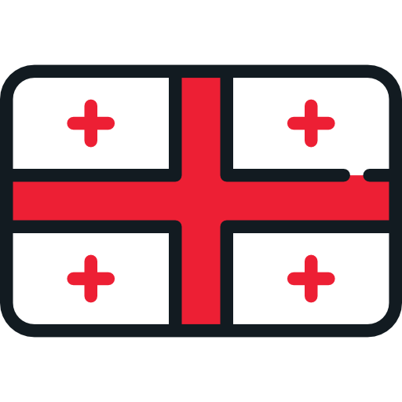
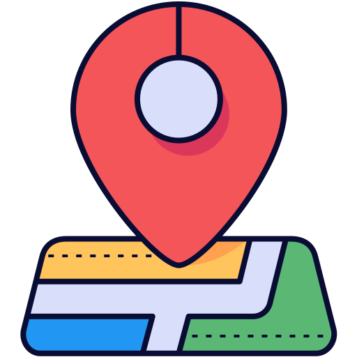

Добро пожаловать в Батуми
Язык
RU · Русский
EN · English
KA · ქართული
UK · Українська
Batumi Maps
Построить маршрут
Моё GPS
Найти проезд
Сброс
Варианты проезда
Маршрут
0
Живые маршруты автобусов
Загрузка маршрутов...
Куда едем?

По GPS
Указать на карте
Live
Туда
Обратно
Маршрут
Завершить маршрут
Найти меня